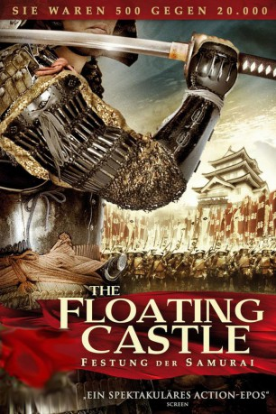
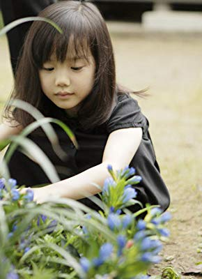

#1980 The Floating Castle - Festung der Samurai
 
 IMDB-Wertung: 6.4 / 10
IMDB-Wertung: 6.4 / 10  Metascore: 0
Metascore: 0 
Japan gegen Ende des 16. Jahrhunderts: Der japanische Kaiser Ishida will die nationale Einigung. Und so hat er ein Heer von zwanzigtausend Männern um sich geschart, um auch die letzten widerspenstigen Provinzen von der Idee zu überzeugen - wenn nötig mit Gewalt. Der militärische Führer Narita Nagachika (Mansai Nomura) will aber lieber unabhängig bleiben. Doch er wird hinter seinem Rücken als ungeschickt und unerfahren betitelt und bekommt daher den wenig schmeichelhaften Spitznamen "Dummkopf" verpasst. Als er aber dann verantwortlich für fünfhundert Mann gegen die zwanzigtausend-starke Armee unter dem Kommando des mächtigen Toyotomi Hideyoshi (Masachika Ichimura) in den Kampf zieht, kann er sich zum ersten Mal mit cleveren Einfällen erfolgreich beweisen. Unterstützung erhält er dabei von Kaihime (Nana Eikura), der Tochter seines Bruders. Gemeinsam ziehen sie in die Schlacht, um Japan vor einer grausamen Übernahme des Feindes zu verteidigen ...
Jahr: 2012
Dauer: 144 Minuten
FSK: 12
Land: Japan Studio: Pandastorm PicturesTonspuren:
Untertitel: Deutsch,
Auflösung: 720p (1280x544) Größe: 4055 MB
Genre: Drama, Komödie, Geschichte
Regisseur: Shinji Higuchi, Isshin Inudô
Drehbuch: Ryô Wada, Ryô Wada
Soundtrack: Kôji Ueno
Darsteller:
 Takayuki Yamada als
Takayuki Yamada als  Isao Natsuyagi als
Isao Natsuyagi als - Motokatsu Suzuki als Saemondayuu Itoh
-  Mana Ashida als Chidori
- Machiko Ono als Chiyo
 Kôichi Satô als
Kôichi Satô als - Nana Eikura als Kaihime
- Hiroki Narimiya als Yukie Sakamaki
- Mansai Nomura als Nagachika narita
- Honami Suzuki als
- Masahiko Nishimura als
- Masachika Ichimura als Hideyoshi toyotomi
- Akiyoshi Nakao als
- LiLiCo als Farmer
 Takehiro Hira als Masaie natsuka
Takehiro Hira als Masaie natsuka- Sei Hiraizumi als
- Tomomitsu Yamaguchi als Shibazaki
- Gin Maeda als Tahee
- Sôkô Wada als
- Takeo Nakahara als
- Makoto Sekine als Drummer
- Yûsuke Kamiji als Mitsunari Ishida
- Jirô Murayama als Drummer
- Akihiro Satô als Drummer
- Takuya Katô als Drummer
- Ryôsuke Yokoyama als Drummer
- Tôru Hasegawa als Drummer
- Tomofumi Tagawa als Drummer
- Mitsunori Morita als Drummer
- Kazuhiro Tsuyuki als Drummer
Datei: X:\HD-Eastern-Classic(A-M)\Floating Castle - Festung der Samurai, The (2012, FSK12, 1280x544).mkv seit 14.09.2015
Festplatte: HD Eastern+Western
 Es gibt insgesamt 63 Filme in der Gruppe 'HD-Eastern-Classic(A-M)'
Es gibt insgesamt 63 Filme in der Gruppe 'HD-Eastern-Classic(A-M)'